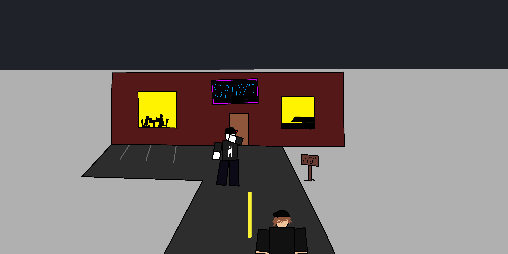

— Вот мы и прибыли! — бодро сказал Тим, выходя из машины.
— Да, твоя первая смена в баре вот-вот начнётся! — ответил Ники, поправляя куртку.

Парни толкнули тяжёлую дверь и зашли в бар, откуда сразу повеяло густым запахом алкоголя, дыма и дешёвых духов. Тим уверенно прошёл за стойку, а Ники остался стоять рядом, пока друг с любопытством разглядывал ряды разноцветных бутылок.
— А где Габби?! — внезапно спохватился Тим, застыв на месте. — Точно... ТОЧНО! Мы же оставили его дома! Ники, срочно съезди за Габби! Дверь гаража осталась открыта, он может убежать!
— Хорошо! Оставайся тут, я за Габби, — в панике ответил Ники. — Мы и так уже опоздали, ты начинай смену!
Некит в спешке выбежал на улицу, прыгнул в машину и в то же мгновение сорвался с места. Пролетая перекрёстки и выжимая максимум, он проскакивал даже на красный свет светофора — ведь он прекрасно знал, насколько Габби важен для Тима.
Тем временем в бар зашёл загадочный покупатель в дорогом костюме и подошёл к стойке.
— Здравствуйте! Что у вас тут есть из крепкого? — спросил неивестный.
— Есть белый коньяк, водка, красное вино... — начал перечислять Тим. — А из самого дорогого — «Кристальное вино». Это самый крепкий напиток в нашем баре, созданный благодаря натуральной кристаллизации спирта в геодах. Правда, оно очень дорогое...
— Вам повезло, что я миллионер, — усмехнулся клиент. — Мне всю бутылку «Кристального»!
«Это же моя первая смена, а он сразу просит самое дорогое, что тут есть... Я даже толком не знаю, где оно хранится!» — панически подумал Тим.
— Сейчас схожу за ним! — ответил Тим и быстро направился в служебное помещение.
Зайдя на тёмный склад, Тим увидал в центре комнаты подсвеченный пьедестал. На нём стояла бутылка с абсолютно прозрачной, переливающейся жидкостью, а снизу блестела табличка: «Кристальное вино — 5 000 000 робуксов».
Тим аккуратно схватил драгоценную бутылку и в спешке побежал обратно за стойку.
— С вас 5 000 000 робуксов! — выдохнул Тим, ставя напиток.
— Отлично. И оставлю вам небольшие чаевые, — ответил клиент.
Мужчина тяжело положил на стойку пухлый чемодан с деньгами, а сверху аккуратно прислонил купюру в 1000 робуксов персонально для Тима.
В этот самый момент тяжелые двери бара резко распахнулись. На пороге тяжело дышал Ники.
— Ники: Габби... ну... кажется, он убежал...
— Тим: ...
Тим замёрз на месте. Уверенная улыбка мгновенно исчезла с его лица. Не сказав ни слова, он бросил чемодан, выскочил из-за стойки, побежал к машине и на полной скорости устремился домой...